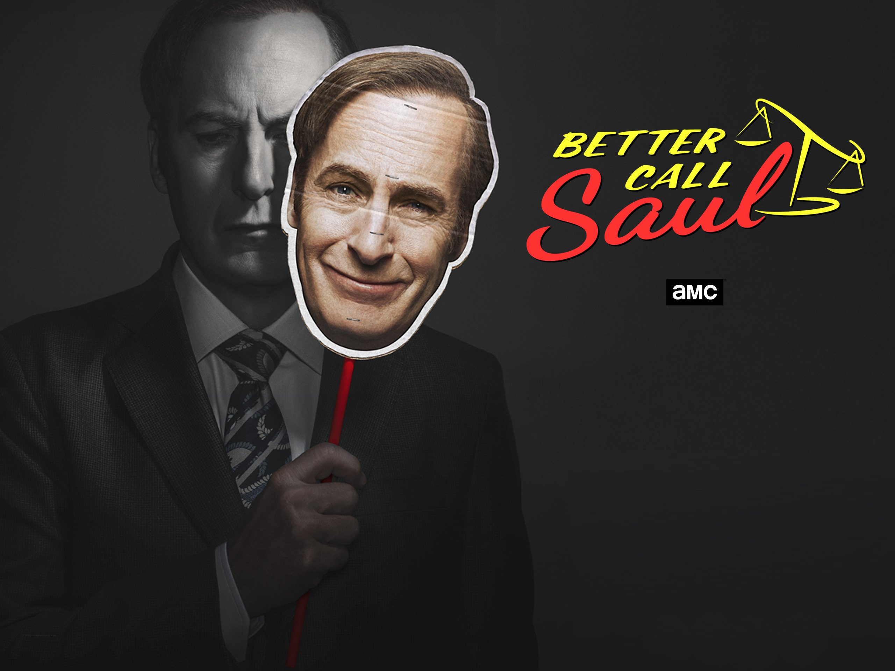

The top 3 TV shows are as follows...
Breaking Bad.

Breaking Bad is an exciting and action packed show about a man named Walter White. Walter is an extremley intelligent man who studied chemistry. In his life hewas cheated out of his portion of a multi-million dollar chemistry company called Grey Matter. Instead of owning Grey Matter, Walter works as a highschool chemistry teacher. Walter is then diagnosed with inoperable lung cancer and needs to make money to leave for his family. Walter turns to manufacturing crystal methamphetamine. In this new career Walter has experiences that destroy his moral character throughout the show.
Demon Slayer.

Demon Slayer is another action packed show about a young man named Tanjiro and his sister Nezuko. In the Demon Slayer universe there are creatures called "demons" that are signifigantly stronger than humans. Tanjiro and Nezuko are the only survivors of their family after a demon attack, however Nezuko was turned into a demon. Tanjiro uses this to fuel his commitment to the Demon Slayer Corps and dedicates his life to fighting the demons in his world. The show follows this inseperable duo and thier adventures with their new found friends of the Demon Slayer Corps.
Better Call Saul.
Better Call Saul is an extremely realistic show that follows a lawyer named Jimmy McGill or his fake name Saul Goodman. This series is a prequel to Breaking Bad. In the show you follow Jimmy, who is a character who is always trying to please those around him, as well as satisfy his hunger for money regardless of the aveneue. Normally Jimmy sticks to legal means but sometimes he bends the rules if the pay out is worth it. In this series you watch Jimmy lose and find himself over and over again.